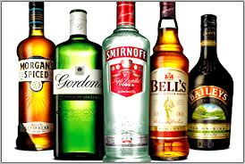
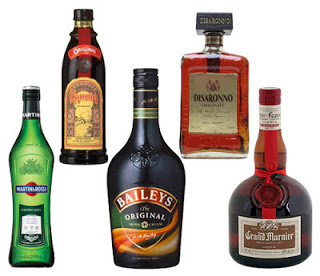
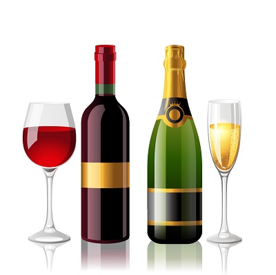
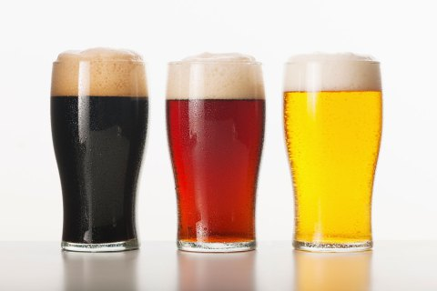

Alcohol comes from the fermentation of grains, fruits, or vegetables. It can come in the form of a drink, cleaner, antiseptic or sedative. As a drink, alcohol is absorbed into the bloodstream and has the ability to affect the central nervous system (CNS).
The most common way for alcohol to be abused is through binge drinking. According to the National Institute on Alcohol Abuse and Alcoholism, it is considered to be binge drinking when the drinker's blood alcohol concentration (BAC) is above 0.08 grams percent. For men, this is about five or more drinks and for women, 4 or more drinks in a two hour time span.
Alcohol is a depressant. Depressants slow down the functions of theCNS. As an effect of drinking alcohol, your perceptions, emotions, movement, vision, and hearing may be altered. Small amounts may allow the person to feel relaxed but in large doses, loss of coordination and the slurring of speech may occur.When a large amount of alcohol is consumed in a short amount of time, the person may receive alcohol poisoning. This could result in sleepiness, difficulty breathing, seizures, or even death if not treated properly. In addition to those health risks, there is also risk for the development of lung disease, heart disease, cancer in the esophagus, mouth, throat, or voice box, and pancreatitis if drinking occurs over a long period of time.Other health risks:Intentional/unintentional injuries, sexually transmitted diseases, unintended pregnany, neurological damage, and sexual dysfunction
1. Spirits: Gin, Vodka, Rum, Whiskey, Tequila, Brandy  2. Liqueurs: Flavored spirits infused with woods, fruits or flowers  3. Wines and Champagne: Red wine, White wine, Rose wine, Sparkling wine, Champagne, Vermouth  4. Beer: Ale, Lager, Cider 